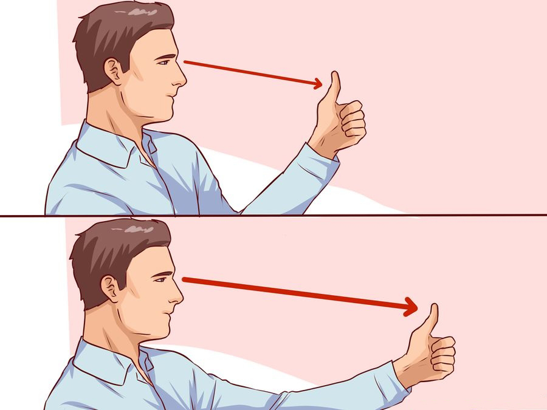
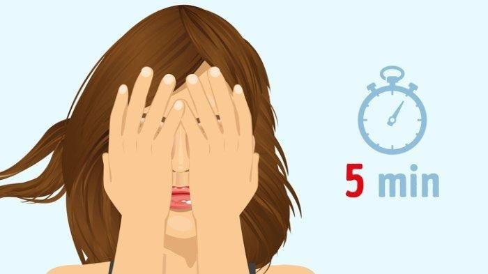
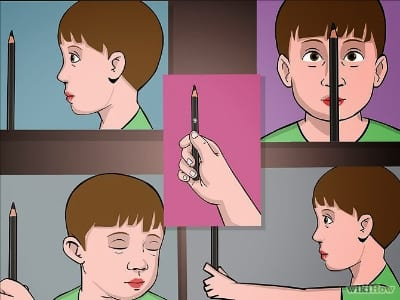
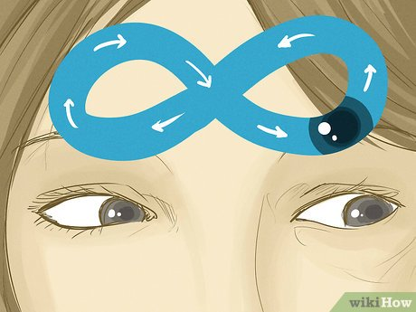

1. Mengubah Fokus
Latihan mata untuk mengubah fokus biasanya melibatkan serangkaian gerakan atau aktivitas yang dirancang untuk melatih kemampuan mata dalam beradaptasi dengan perubahan fokus atau jarak. Ini dapat membantu meningkatkan fleksibilitas visual dan mengurangi kelelahan mata. Latihan yang bertujuan untuk melatih fokus mata kamu ini harus dilakukan dalam posisi duduk. Begini caranya:
- Posisikan jari telunjuk beberapa inci dari mata.
- Lalu, fokuskan mata pada jari.
- Secara perlahan, gerakkan jari menjauh dari wajah kamu, tapi tahan fokus kamu pada jari.
- Berpalinglah sejenak ke kejauhan.
- Fokus pada jari kamu yang terulur dan perlahan arahkan kembali ke mata.
- Alihkan pandangan dan fokuslah pada sesuatu benda yang berada di kejauhan.
- Ulangi latihan ini sebanyak tiga kali.
2. Palming
Teknik menutup kedua mata secara lembut dengan telapak tangan disebut palming. Latihan ini membantu merilekskan mata dan juga menghasilkan redistribusi air mata dan pelumasan permukaan mata.
Berikut cara melakukan palming:
- Atur duduk dan sandarkan tubuh ke meja. Jika tidak ada permukaan yang keras, kemudian letakan siku di lutut dan condongkan tubuh ke depan.
- Tutup mata.
- Letakkan tangan di atas mata. Pastikan bagian tengah telapak tangan harus menutupi mata; ujung jari harus berada di dahi; pangkal telapak tangan akan bertumpu pada tulang pipi.
- Jangan memberi tekanan pada mata. Pastikan mata harus bisa berkedip dengan mudah.
- Ulangi latihan ini tiga kali sehari saat bekerja dengan perangkat digital.
Senam mata ini dianggap ampuh karena tekanan tangan di sekitar mata membantu meredakan ketegangan otot.


3. Pencil Push-up
Ini adalah jenis latihan yang digunakan dalam terapi mata, terutama untuk meningkatkan koordinasi mata dan membantu pengobatan masalah seperti mata minus (myopia) atau masalah mata lainnya.
Seorang dokter mungkin merekomendasikan latihan ini sebagai bagian dari terapi penglihatan. berikut caranya:
- Pegang pensil sepanjang lengan, terletak di antara mata.
- Lihatlah pensil dan cobalah untuk menyimpan satu gambar sambil perlahan-lahan menggerakkannya ke arah hidung.
- Gerakkan pensil ke arah hidung sampai pensil tidak lagi menjadi satu gambar.
- Posisikan pensil pada titik terdekat di mana masih berupa gambar tunggal.
- Ulangi 20 kali.
4. Figure 8
Latihan mata dengan pola gerakan angka delapan (figure 8) dapat membantu meningkatkan fleksibilitas mata, meningkatkan koordinasi mata, dan merangsang otot-otot mata.
Berikut adalah cara melakukan latihan mata figure 8:
- Pastikan Anda berada di lingkungan yang tenang dan bebas dari gangguan untuk fokus sepenuhnya pada latihan.
- Duduk dalam posisi yang nyaman dengan punggung lurus. Pastikan kepala Anda tidak tertunduk atau terlalu tinggi.
- Pilih suatu objek atau titik di depan Anda (misalnya, pena atau jari tangan).
- Gambarlah pola angka delapan horizontal di depan mata Anda. Coba ikuti pergerakan pola dengan mata Anda secara perlahan.
- Mulailah dengan mengikuti pola angka delapan dengan mata Anda.
- Gerakkan mata Anda searah jarum jam untuk setengah lingkaran pertama angka delapan, lalu melawan arah jarum jam untuk setengah lingkaran kedua.
- Pastikan gerakan mata Anda halus dan terkendali.
- Setelah Anda nyaman dengan gerakan mata saat mata terbuka, coba lakukan latihan ini dengan mata tertutup.
- Lakukan latihan ini beberapa kali dan konsisten.
